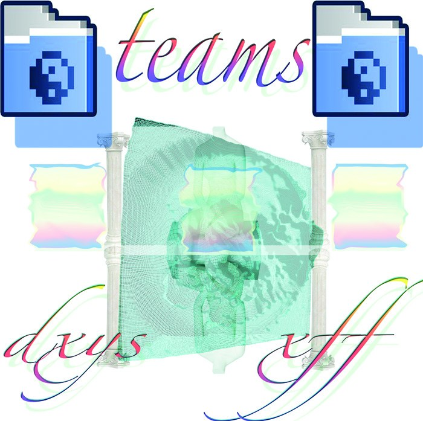
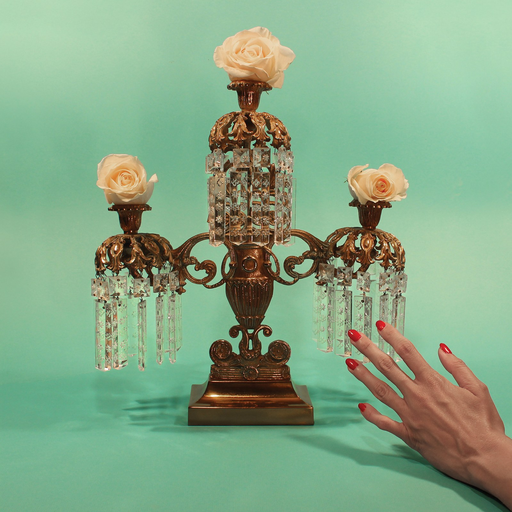
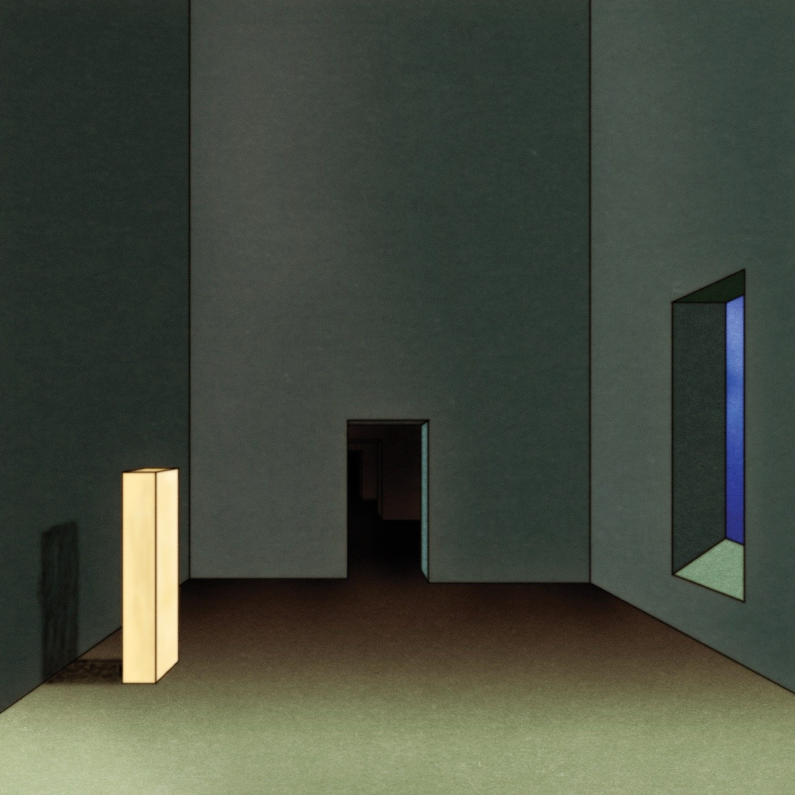
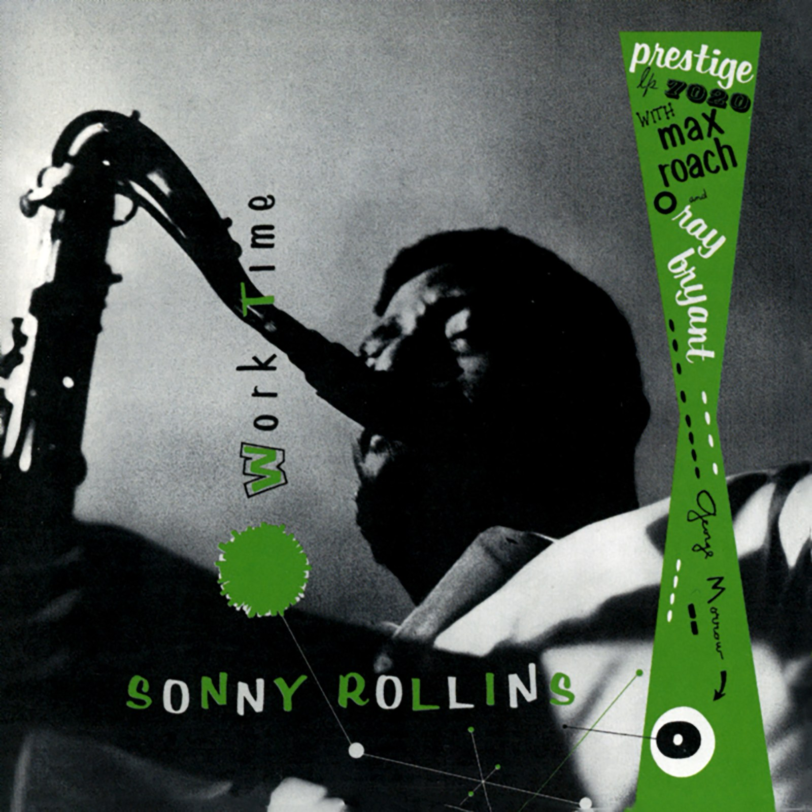
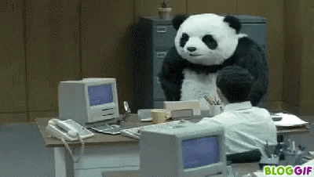
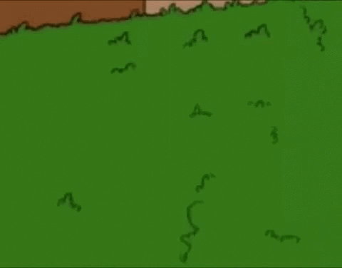
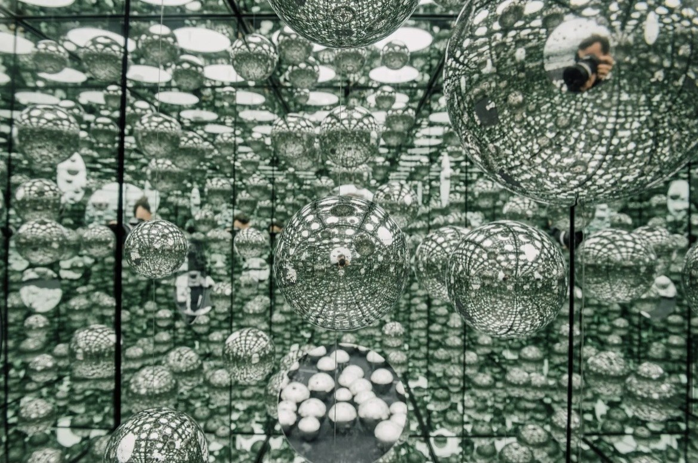

CRVI000008Boards Of Canada - Music Has The Right To Children
Designed by Boards Of Canada · Warp Records · 1998
Designed by Boards Of Canada · Warp Records · 1998

CRVI000019Two Lone Swordsmen - Stay Down
Designed by Haywire, James Woodbourne · Warp Records · 1998
Designed by Haywire, James Woodbourne · Warp Records · 1998

CRVI000021Negativland - A Big 10-8 Place
Designed by Ian Allen, Mark Hosler · Seeland · 1983
Designed by Ian Allen, Mark Hosler · Seeland · 1983
CRVI000023NxxxxxS - Fujita Scale
Artwork by Ivan Peev · Headcount Records · 2014
Artwork by Ivan Peev · Headcount Records · 2014

CRVI000034Teams - Dxys Xff
Artwork by Jónó Mí Ló · AMDISCS · 2011
Artwork by Jónó Mí Ló · AMDISCS · 2011

CRVI000042Tropic Of Cancer - Restless Idylls
Designed by Oliver Smith · 2013
Designed by Oliver Smith · 2013

CRVI000045Various - Artificial Intelligence II
Artwork by Phil Wolstenholme, The Designers Republic · Warp Records · 1994
Artwork by Phil Wolstenholme, The Designers Republic · Warp Records · 1994

CRVI000048Oneohtrix Point Never - R Plus Seven
Designed by Robert Beatty · Warp Records · 2013
Designed by Robert Beatty · Warp Records · 2013

CRVI000056The Other People Place - Lifestyles Of The Laptop Café
Designed by The Designers Republic · 2001
Designed by The Designers Republic · 2001

CRVI000058Flying Lotus - Pattern +Grid World
Designed by Theo Ellsworth · Warp Records · 2010
Designed by Theo Ellsworth · Warp Records · 2010
CRVI000089FUSE - Dimension Intrusion
Designer unknown · Plus 8 Records · 1993
Designer unknown · Plus 8 Records · 1993

CRVI000094Various - Artificial Intelligence
Designer unknown · Warp Records · 1992
Designer unknown · Warp Records · 1992

CRVI000108Masuteru Aoba - A.D. 3000 ⋯ Energy-Addicted Man?
エネルギーに頼り過ぎた3000年の人間？
エネルギーに頼り過ぎた3000年の人間？

CRVI000125Yusaku Kamekura - Expo '70
Japan World Exposition, Osaka · 'Progress and Harmony for Mankind' · 1970
Japan World Exposition, Osaka · 'Progress and Harmony for Mankind' · 1970

CRVI000134Shigeo Fukuda - Shigeo Fukuda
Exhibition, Keio Department Store SF Art Gallery, 23–28 May 1975 · 1975
Exhibition, Keio Department Store SF Art Gallery, 23–28 May 1975 · 1975

CRVI000156Kazumasa Nagai - Design Forum - Matsuya Ginza
Designed by Kazumasa Nagai · 1981
Designed by Kazumasa Nagai · 1981

CRVI000173Sonny Rollins - Work Time
Designer unknown · Prestige LP 7020 · 1955
Designer unknown · Prestige LP 7020 · 1955

CRVI000183Dee Dee Sharp - Songs of Faith
Designer unknown · Cameo · 1962
Designer unknown · Cameo · 1962

CRVI000195Unknown - Desk Flip
Reaction GIF · Panda in an office · 43 frames, 5.2s loop
Reaction GIF · Panda in an office · 43 frames, 5.2s loop

CRVI000202Unknown - Oh No
Reaction GIF · Abraham Simpson, The Simpsons · 51 frames, 5.1s loop
Reaction GIF · Abraham Simpson, The Simpsons · 51 frames, 5.1s loop

CRVI000209Unknown - First Pitch
Reaction GIF · Sister Mary Jo Sobieck · 170 frames, 5.1s loop · 2018
Reaction GIF · Sister Mary Jo Sobieck · 170 frames, 5.1s loop · 2018

CRVI000223Yayoi Kusama - Infinity Mirrored Room — Let's Survive Forever
Photograph by Vincent Tullo · David Zwirner Gallery · 2017
Photograph by Vincent Tullo · David Zwirner Gallery · 2017